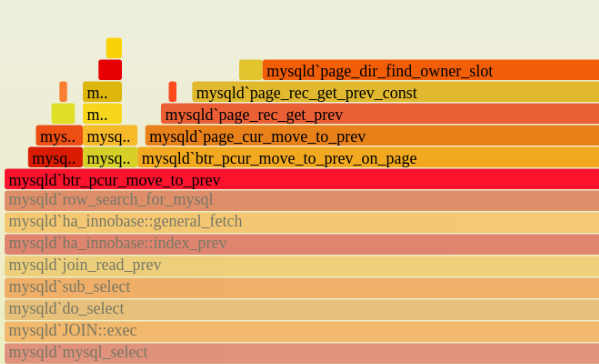

安装perf
1 | yum install -y perf |
数据采样
1 | perf record -F 99 -p PID -g -- sleep 60 |
-F 99: 每秒采样99次-p PID: 指定进程id-g: 记录调用栈sleep 60: 持续60秒, 如果不加则一直采样到手动中断(CRTL+C)为止
上面的命令会生成一个perf.data的文件.
- 执行
perf report -n可以生成报告的预览 - 执行
perf report -n --stdio可以生成一个详细的报告 - 执行
perf script > out.perf可以 dump 出 perf.data 的内容
生成火焰图
通常的做法是将 out.perf 拷贝到本地机器在本地生成火焰图1
2
3
4
5
6
7
8# 下载火焰图生成工程
git clone --depth 1 https://github.com/brendangregg/FlameGraph.git
# 折叠调用栈
FlameGraph/stackcollapse-perf.pl out.perf > out.folded
# 生成火焰图
FlameGraph/flamegraph.pl out.folded > out.svg
生成火焰图可以指定参数，–width 可以指定图片宽度，–height 指定每一个调用栈的高度
火焰图含义

y轴代表调用栈, 每一层都是一个函数调用, 栈越深则火焰越高, 调用关系是从下而上的, 即下层函数调用了上层函数.
x轴表示抽样数, 一个函数在x轴占据的宽度越宽, 则表示它被抽样到的次数也就越多, 也就是说它执行的时间越长. 注意, x轴不代表时间顺序, 而是所有的调用栈合并后, 按字母排序的.
火焰图就是看函数占据的宽度, 宽度越大越可能存在性能问题.
颜色没有特殊含义, 因为火焰图表示的是 CPU 的繁忙程度, 所以一般选择暖色调.
火焰图互动性
鼠标放到一个函数上后, 会展示完整的函数名, 被抽样中的次数, 占总抽样次数的百分比.
JavaThread::run (956 samples, 72.70%)点击某个函数后, 该函数会水平放大到占据整个页面, 展示详细信息.

点击左上角Reset Zoom恢复缩放ctrl + f可以搜索关键词或正则, 所有符合的函数名会高亮显示
局限
两种情况下, 无法画出火焰图, 需要修正系统行为
- 调用栈不完整, 当调用栈过深时, 某些系统只返回前面的一部分(如前10层)
- 函数名缺失, 有些函数没有名字, 编译器只用内存地址来表示(如匿名函数)
使用 Perf 和火焰图分析 CPU 性能
如何读懂火焰图？
Flame Graphs visualize profiled code